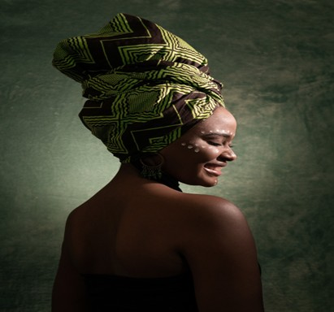

Headwraps Collection: Elevate Your Style with Fashionable Hair Wraps
Welcome to the Headwraps Collection at Yougonatural.com, where fashion meets functionality. Whether you're looking to protect your hair, express your unique style, or add a touch of flair to any outfit, our collection of fashionable head wraps offers a versatile solution. Explore our wide range of headwraps that not only enhance your look but also promote hair care and protection.
The Beauty of Headwraps: Fashion and Function Combined
Headwraps have been a timeless symbol of culture, fashion, and practicality for centuries. Today, headwraps serve as both a statement of style and an essential accessory in hair care routines. Whether you have curly, straight, or textured hair, a hair wrap can serve as a protective shield, preventing frizz and damage while adding a chic element to your wardrobe. Here’s why headwraps are a must-have for every hair care routine.
1. Protect Your Hair from Damage:Hair wraps are a fantastic way to protect your hair from daily environmental stressors, such as UV rays, dust, and pollution. Using headwraps made from soft, breathable fabrics like cotton, satin, or silk can help shield your hair from these damaging elements. Satin and silk wraps, in particular, are gentle on the hair, preventing breakage and preserving moisture, which is essential for healthy hair.
2. Reduce Frizz and Promote Healthy Hair:If you're tired of battling frizz, especially in humid or dry conditions, headwraps can provide the solution. By covering your hair, you create a protective barrier that prevents moisture loss and reduces the risk of frizz. Many fabrics used in fashionable head wraps, like silk and satin, also help lock in your hair’s natural oils, promoting healthier, more manageable locks.
3. Perfect for Every Hair Type:One of the best aspects of hair wraps is their versatility. They work wonders for all hair types, from straight and wavy to curly and coily. Whether you're wrapping your hair for a protective style or to add some flair to your everyday look, headwraps offer endless possibilities. Our Headwraps Collection includes options suitable for every hair texture and need, allowing you to tailor your headwrap experience to your unique hair care routine.
Explore Our Headwraps Collection
Satin Hair Wraps for Hair Care
Cotton Headwraps for Everyday Style
Patterned and Printed Headwraps
Wide and Versatile Wraps for Larger Hair
Silk Hair Wraps for Hair Care
Turban-Style Headwraps for an Elegant Look
How to Use Headwraps for Optimal Hair Care
Using headwraps isn't just about looking good—it’s also about enhancing your hair care routine. Here are a few tips on how to incorporate headwraps into your daily hair care regimen:
1. Protect Your Hair While You Sleep:One of the best ways to protect your hair while maintaining its health is to wear a hair wrap at night. This will reduce friction between your hair and the pillowcase, preventing breakage and split ends. Satin and silk wraps are ideal for overnight wear as they lock in moisture and help your curls or waves retain their shape.
2. Use Headwraps for Protective Styling:Protective hairstyles are a great way to keep your hair healthy and promote growth. Incorporating headwraps into these styles provides an added layer of protection from environmental damage, while also ensuring that your hair remains stylish and protected throughout the day.
3. Enhance Your Hair's Moisture Retention:When you wear a headwrap made from moisture-preserving fabrics like satin or silk, you're helping your hair retain its natural oils. This is especially beneficial for individuals with dry or textured hair. Regular use of these wraps can promote healthier hair and minimize dryness and frizz.
4. Experiment with Different Styles:Headwraps offer endless styling possibilities. Try experimenting with different tying techniques, folds, and twists to create new looks. Whether you’re looking to cover your hair completely, create a stylish updo, or simply add a touch of color, there’s no limit to how you can style your hair wrap.
Why Choose Yougonatural.com for Your Headwraps?
At Yougonatural.com, we’re committed to providing high-quality hair wraps that not only meet your style needs but also support healthy hair care. Here’s why you should shop with us:
1. Premium Materials for Better Hair Health:We only use the finest materials in our headwraps, such as satin, silk, and cotton, all chosen for their ability to protect and promote healthy hair. These materials help prevent frizz, lock in moisture, and reduce hair breakage.
2. Stylish and Functional Designs:Our fashionable head wraps are designed to cater to various styles, from elegant turban wraps to casual cotton headbands. You’ll find a wide variety of patterns, colors, and sizes to fit your personal style and hair care needs.
3. Perfect for Every Hair Type:Whether you have curly, wavy, straight, or coily hair, our headwraps are designed to work for all hair types. Our wraps provide the perfect balance of comfort, style, and protection, ensuring your hair stays in its best condition.

Shop the Headwraps Collection Now!
Ready to upgrade your hair care routine with a stylish and functional headwrap? Browse our Headwraps Collection today and find the perfect accessory to protect and enhance your hair. Whether you're looking for a satin hair wrap for bedtime or a bold turban-style wrap for a night out, we have something for every need and every style.
Shop Now and discover the perfect headwrap to elevate your look and care for your hair with Yougonatural.com.